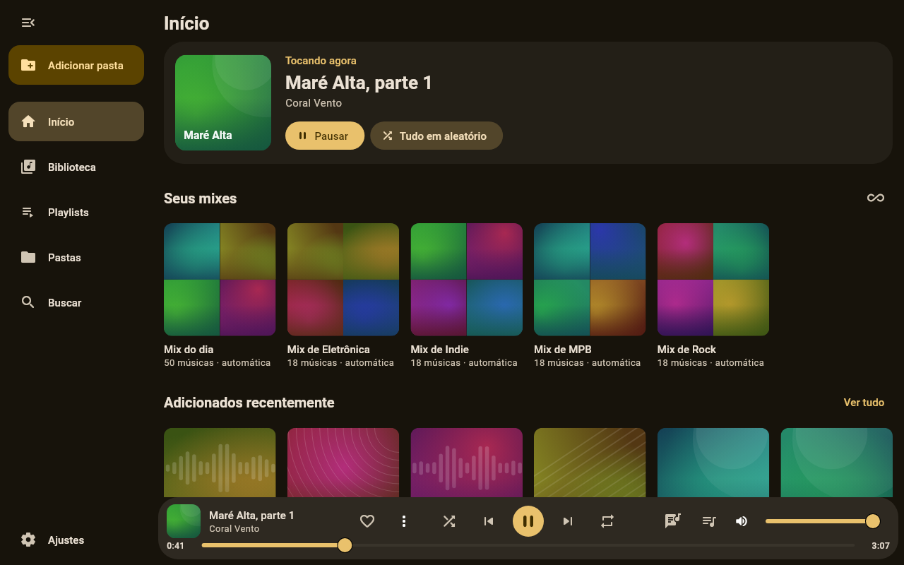
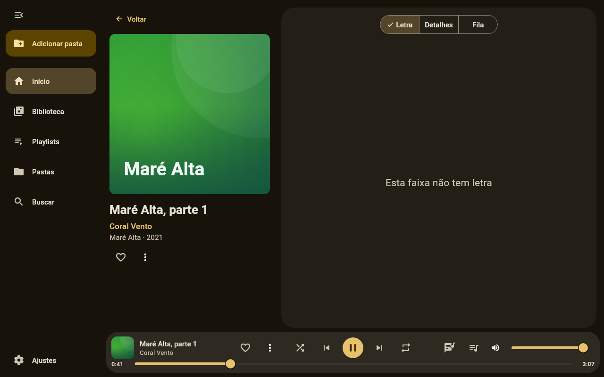
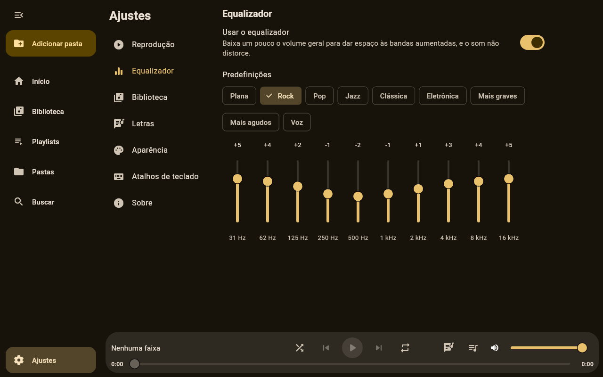

Your music, on your computer.
A local music player for Linux, with synced lyrics. No account, no streaming and no telemetry: what you listen to stays with you.
A look inside



Screenshots with sample data, in Portuguese. The player follows your system's language, in seven languages.
What it does
- Plays FLAC, MP3, OGG, Opus, M4A, AAC, WMA, APE, WavPack, AIFF and WAV, without gaps
- Library of albums, artists, genres and folders, kept up to date as files change
- Synced lyrics from
.lrc,.srtor the file's tags - Favorites, optional star ratings, playlists and daily mixes made from your library
- Ten-band equalizer and ReplayGain
- Compact and mini player modes, media keys and desktop sound applets
Install
Debian, Ubuntu, Mint
On Debian 13, Ubuntu 24.04, Mint 22 or newer, on amd64. It updates along with the system.
sudo mkdir -p /etc/apt/keyrings curl -fsSL https://francisceioseph.github.io/psito-player/psito-player.asc | sudo tee /etc/apt/keyrings/psito-player.asc >/dev/null printf 'Types: deb\nURIs: https://francisceioseph.github.io/psito-player\nSuites: stable\nComponents: main\nArchitectures: amd64\nSigned-By: /etc/apt/keyrings/psito-player.asc\n' | sudo tee /etc/apt/sources.list.d/psito-player.sources >/dev/null sudo apt update sudo apt install psito-player
To remove it, and the repository
sudo apt remove psito-player sudo rm /etc/apt/sources.list.d/psito-player.sources /etc/apt/keyrings/psito-player.asc
Fedora
On x86_64, tested on Fedora 45. It updates along with the system. The first install asks you to accept the signing key.
sudo curl -fsSL -o /etc/yum.repos.d/psito-player.repo https://francisceioseph.github.io/psito-player/psito-player.repo sudo dnf install psito-player
To remove it, and the repository
sudo dnf remove psito-player sudo rm /etc/yum.repos.d/psito-player.repo
Arch Linux, Manjaro, EndeavourOS
From the AUR, with your usual helper:
yay -S psito-player-bin
Another system? You can download the package or build from source.